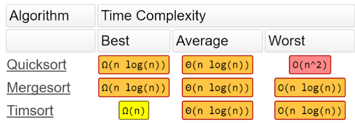
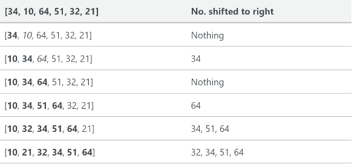
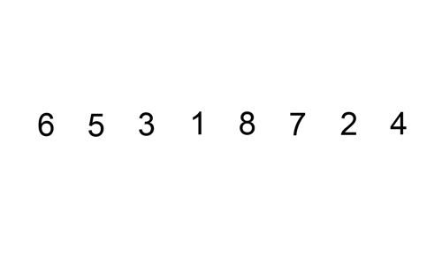
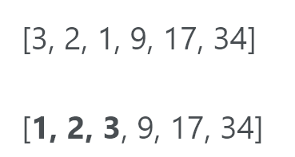
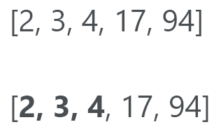
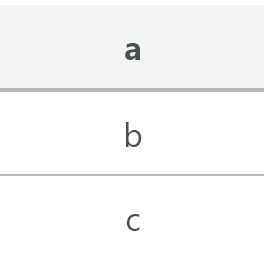
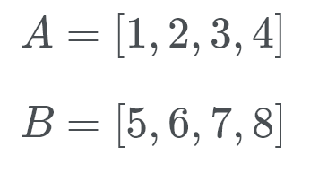

2018 08 16 Timsort 你从未听说过的最快的排序算法
本文翻译自Timsort — the fastest sorting algorithm you’ve never heard of，如侵必删。
Timsort: 一个非常快速的，时间复杂度O(n log n)，为真实世界构建的稳定排序算法——而不是学术界。
Timsort是一个对于真实世界数据具有高效率的、不是在学术实验室中发表的排序算法，由Tim Peters在2001年为Python编程语言创造。它试图首先分析需要排序的列表，然后基于分析选择一种方法。
从发表至今，该算法已经被用作Python, Java, Android(TM)和GNU Octave用作默认排序算法。
Timsort的大O标记法(big O notation)是O(n log n).学习大O标记法，请移步至此。

Timsort的排序时间与归并排序相同，后者比您可能知道的其他大多数排序算法要快。正如你很快将要看到的，Timsort实际上使用了插入排序和归并排序。
Peters将Timsort设计为使用真实世界的数据中已经有序的元素。它将这些已经有序的元素称作“自然的运行(natural runs)”。它迭代整个数据，将元素收集到多个run中，同时将多个run合并到一个。
列表长度小于64
若列表尝试排序其内部少于64个元素时，Timsort将会执行一个插入排序。
插入排序是一种简单的排序，对于小型列表效率最高。在较大的列表中确实比较慢，但在小型列表中却非常快。插入排序的概念如下：
- 逐个查看元素
- 通过将元素插入正确的位置来构建排序列表
这是一个跟踪列表，显示了[34, 10, 64, 51, 32, 21]如何进行插入排序：

在这个例子中，我们将一个新排序的元素插入一个新的子数组，该子数组从数组的开头开始。
这是一个显示插入排序的GIF：

关于run的细节
如果列表大于64个元素，则算法将首先通过列表查找严格增加或减少的部分。如果某个部分正在减少，它将该部分反转。因此，如果运行正在减少，它将看起来像这样（运行以粗体显示）：

若不减少，则看起来像这样：

minrun是基于数组大小确定的。该算法选择它，以便大多数在随机数组中运行的长度为minrun。当运行次数等于或略小于2的幂时，合并2个数组会更高效。Timsort选择minrun来保持使minrun的长度不大于2的幂。该算法选择范围为32到64（包括32和64）的minrun，使得原始数组的长度除以minrun时等于或略小于2的幂。
如果某个run的长度小于minrun，则计算两者差值，使用此新数字，您可以在run的头部获取许多元素并执行插入排序以创建一个新的run。
因此，如果minrun为63并且run的长度为33，则执行63-33 = 30，然后从run的末尾前抓取30个元素，这是来自run[33]的30个元素然后执行用于创建新run的插入排序。
当本部分完成之后，我们应该在数组中有一堆已经排序的run。
合并
Timsort现在执行mergesort以将运行合并在一起。但是，Timsort确保在合并排序时保持稳定性和合并平衡。为了保持稳定，我们不应该交换2个相等数值的数字。这不仅使其原始位置保持在列表中，而且使算法更快。我们将在短期内讨论合并平衡。
当Timsort查找run时，会将它们添加到堆栈中。一个简单的堆栈看起来像这样：

想象一堆盘子。你不能从底部取板，所以你必须从顶部一个一个拿走它们，堆栈也是如此。
当合并运行时，Timsort试图平衡两个竞争需求。一方面，我们希望尽可能地延迟合并，以便利用可能在以后出现的模式。但是我们希望尽快进行合并以利用刚刚发现的运行在内存层次结构中仍然很高的run。我们也不能延迟合并“太长”，因为它消耗内存来记住仍然未合并的运行，并且堆栈具有固定的大小。
为了确保我们有这种妥协，Timsort会跟踪堆栈中最近的三个项目并创建两个必须符合这些项目的法则：
-
A > B + C
-
B > C
其中A，B和C是堆栈中最近的三个项目。
用Tim Peters本人的话来说：
What turned out to be a good compromise maintains two invariants on the stack entries, where A, B and C are the lengths of the three righmost not-yet merged slices.
通常，将不同长度的相邻运行合并到位是很困难的。更难的是我们必须保持稳定。为了解决这个问题，Timsort留出了临时内存。它将两次运行的较小（调用运行A和B）放入该临时内存中。
疾驰（Galloping）
虽然Timsort正在合并A和B，但它注意到一次run已连续多次“完成”。如果结果表明运行A的数量比运行B的数量少，那么运行A将最终返回其原始位置。合并两次运行将涉及大量工作以实现任何目标。
通常情况下，数据将具有一些预先存在的内部结构。 Timsort假设如果许多运行A的值低于运行B的值，则A可能继续具有比B更小的值。

然后Timsort将进入疾驰模式。 Timsort不是相互检查A[0]和B[0]，而是对[0]中b [0]的适当位置进行二分搜索。通过这种方式，Timsort可以将整个A部分移动到位。然后Timsort在B中搜索A[0]的适当位置。然后，Timsort将立即移动整个B罐的部分，并将其移动到位。
让我们关注一下它。 Timsort检查B[0]（即5）并使用二进制搜索它在A中查找正确的位置。好吧，B[0]属于A列表的后面。现在Timsort在B的正确位置检查A[0]（即1）。所以我们要查看数字1的位置。这个数字在B的开头。我们现在知道B属于A的末尾，A属于B的开头。事实证明，如果B[0]的适当位置非常接近A的开头（或反之亦然），则此操作不值得。所以如果没有得到回报，驰骋模式会很快退出。此外，Timsort注意到并且通过增加进入所需的连续A-only或B-only胜利的次数使得进入驰骋模式变得更加困难。如果驰骋模式得到回报，Timsort让它更容易重入。
简而言之，Timsort做了两件令人难以置信的事情：
- 具有预先存在的内部结构的阵列具有出色的性能
- 能够保持稳定的排序
以前，为了实现稳定的排序，您必须使用整数将列表中的项目压缩，并将其排序为元组数组。
代码
如果您对代码不感兴趣，请跳过此部分。本节下面还有一些信息。
下面的源代码基于我和Nanda Javarma的工作。源代码不完整，也不类似于Python的官方sorted()源代码。这只是我实现的一个愚蠢的Timsort，以获得Timsort的大概感觉。如果你想看到Timsort的原创源代码，请在这里查看。 Timsort是用C语言实现的，而不是Python。
# based off of this code https://gist.github.com/nandajavarma/a3a6b62f34e74ec4c31674934327bbd3
# Brandon Skerritt
# https://skerritt.tech
def binary_search(the_array, item, start, end):
if start == end:
if the_array[start] > item:
return start
else:
return start + 1
if start > end:
return start
mid = round((start + end)/ 2)
if the_array[mid] < item:
return binary_search(the_array, item, mid + 1, end)
elif the_array[mid] > item:
return binary_search(the_array, item, start, mid - 1)
else:
return mid
"""
Insertion sort that timsort uses if the array size is small or if
the size of the "run" is small
"""
def insertion_sort(the_array):
l = len(the_array)
for index in range(1, l):
value = the_array[index]
pos = binary_search(the_array, value, 0, index - 1)
the_array = the_array[:pos] + [value] + the_array[pos:index] + the_array[index+1:]
return the_array
def merge(left, right):
"""Takes two sorted lists and returns a single sorted list by comparing the
elements one at a time.
[1, 2, 3, 4, 5, 6]
"""
if not left:
return right
if not right:
return left
if left[0] < right[0]:
return [left[0]] + merge(left[1:], right)
return [right[0]] + merge(left, right[1:])
def timsort(the_array):
runs, sorted_runs = [], []
length = len(the_array)
new_run = [the_array[0]]
# for every i in the range of 1 to length of array
for i in range(1, length):
# if i is at the end of the list
if i == length - 1:
new_run.append(the_array[i])
runs.append(new_run)
break
# if the i'th element of the array is less than the one before it
if the_array[i] < the_array[i-1]:
# if new_run is set to None (NULL)
if not new_run:
runs.append([the_array[i]])
new_run.append(the_array[i])
else:
runs.append(new_run)
new_run = []
# else if its equal to or more than
else:
new_run.append(the_array[i])
# for every item in runs, append it using insertion sort
for item in runs:
sorted_runs.append(insertion_sort(item))
# for every run in sorted_runs, merge them
sorted_array = []
for run in sorted_runs:
sorted_array = merge(sorted_array, run)
print(sorted_array)
timsort([2, 3, 1, 5, 6, 7])
Timsort实际上是内置于Python中的，所以这段代码只能作为解释。要使用Timsort，只需写：
list.sort()
或者：
sorted(list)
如果你想掌握Timsort如何工作并感受它，我强烈建议你自己尝试实现它！
本文基于Tim Peters对Timsort的原始介绍，可在此处找到。